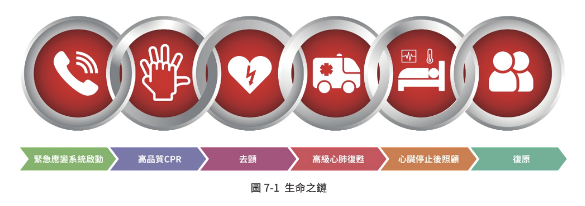

常見非外傷的評估、處置與情境操作
救護技術員在急救現場快速評估、判斷緊急程度、執行標準流程。本章把十大常見急症拆成「初判 → 重點檢查 → 必要處置」三步節奏，輔以流程圖學習。
🎯 學習目標
- ☑熟悉到院前心肺功能停止急救流程。
- ☑瞭解常見的基礎急症處置。
- ☑熟悉傳染病預防與控制的處置流程。
本章依民國 113 年 5 月 15 日新修訂《救護技術員管理辦法》初級模組六「常見急症的處置」與中級模組四「常見急症的評估、處置與情境操作」編撰，全章以流程圖輔助學習。
共通三步節奏
每一種急症都先進入「非外傷現場救護流程」判定主訴，再依本章對應流程：重點式身體檢查 → 輔助檢查（血壓/血氧/血糖）→ 必要處置 → 上擔架床 → 救護車內救護流程。
十大主題快速進入
01 到院前心跳停止病人（OHCA）
美國與加拿大每年每 10 萬人約 50–55 例 OHCA。能否復甦取決於「生命之鏈」六個環節是否環環相扣，其中前四環與 EMS 直接相關。
🔗 圖 7-1 生命之鏈（六環）

assets/img/chap7-fig7-1.png 即可自動顯示。
🔗 六環詳解
📞 儘早辨識心跳停止及啟動緊急醫療系統
辨識倒地、撥打 119、啟動 EMS。
🤲 儘早給予高品質 CPR
減少按壓中斷、足夠深度與速度。
⚡ 儘快去顫（AED）
越早電擊可電擊心律，存活率越高。
🚑 有效的高級心肺復甦
進階呼吸道、給藥與整合處置。
🏥 整合心跳停止後的照護
ROSC 後低溫治療、循環支持等。
💪 病人及其照護者的復原
生理、心理與社會功能的康復。
🩺 到院前心跳停止流程（圖 7-2）
立即胸部按壓
立即胸部按壓
🫀 院前啟動體外心肺復甦術（ECPR / ECMO）
篩選適合的 OHCA 患者於到院後儘速放置葉克膜，對存活率與神經學預後有幫助。以新北市、臺北市為例，符合下列全部六項要件可預先通報醫院準備：
02 意識不清
急性意識改變（GCS<14）原因眾多。用 A-E-I-O-U-T-I-P-S 系統性思考成因，並以瞳孔、神經學檢查找出最可能原因。長期臥床者意識與平常相同則不算急性改變。
🔠 AEIOUTIPS — 意識不清成因（點擊展開）
👁️ 重點檢查：瞳孔與神經學
正常瞳孔
兩側等大、約 2–4 mm，對光有反應。
針狀瞳孔（Pinpoint）
疑鴉片類（海洛因/嗎啡）過量、有機磷中毒、腦幹中風。
兩側不等大
單側放大且對光無收縮 → 第三對腦神經受壓，常為該側腦疝脫、腦出血或腫瘤。
疑似中風者後送姿勢建議頭部抬高 30 度半坐臥；可用疼痛刺激測試神經反應。
🧠 缺血性腦中風的生命之鏈 8Ds（表 7-1）
| Detection 辨識 | 辨識徵兆與症狀（FAST） |
| Dispatch 派遣 | 撥 119、啟動 EMS、優先派遣 |
| Delivery 運送 | 快速送醫並院前通報 |
| Door 抵達急診 | 檢傷分類與初步處置 |
| Data 資料收集 | 急診評估、檢驗、影像 |
| Decision 決策 | 醫師診斷與治療策略 |
| Drug 給藥 | 儘快給藥或介入治療 |
| Disposition 後續 | 收治中風單位或專責病房 |
⏱️ 中風時間窗與後送決策
- 院前中風指標（辛辛那提）：嘴角歪斜、口齒不清/失語、單側肢體無力或麻木三項。
- 症狀發生 4.5 小時內 → 轉送有能力施行靜脈血栓溶解之急救責任醫院。
- 症狀 24 小時內且疑似大血管阻塞中風 → 轉送有能力施行動脈內取栓術醫院。
- G-FAST：辛辛那提三項 + 眼球運動受限/偏向，4 項中 ≥3 項異常 → 疑大血管阻塞。
🩺 非外傷意識不清救護流程（圖 7-3）
或葡萄糖水靜注
意識改變原因
03 呼吸困難
主訴喘、呼吸不順或困難，評估呼吸異常（深淺快慢）、呼吸作功增加（張口呼吸、使用輔助呼吸肌、肋間/鎖骨上內縮）或異常呼吸音，即進入本流程。
🔊 喘鳴音 Stridor
空氣通過阻塞狹窄的上呼吸道所形成，如張口用力吸氣發出「ㄏㄜ」聲，多於吸氣期聽到，有時不需聽診器可直接聽到。
🌬️ 哮鳴音 Wheezing
空氣通過收縮狹窄的小支氣管形成，如多人吹口哨聲，原則上出現在吐氣期；嚴重氣喘可同時出現在吸氣與吐氣期。
疑氣喘或慢性阻塞性肺病突發、病人自備短效型吸入性支氣管擴張劑且意識清醒時，可協助病人或家屬給予。
🩺 呼吸困難救護流程（圖 7-6）
慢性阻塞性肺病病人 SpO₂ 應 <90%、或老年人 SpO₂ <92% 才給氧。意識清醒可採半坐臥或病人覺舒適姿勢。
⚠️ 過度換氣症候群
快速呼吸伴隨恐慌、胸痛、心悸、肢體麻木、甚至窒息感時須懷疑。處置上安慰病人、減輕壓力、請其深呼吸放慢速率。腦病變、肺栓塞、心肌梗塞、酸血症或氣胸也可能以過度換氣表現。
04 低血壓、休克
低血壓：成人收縮壓 < 90 mmHg 或 MAP < 65 mmHg。休克是全身性循環衰竭、組織灌流不足，與心臟、血管與血量有關，可分四大類。
🔄 四型休克（點選查看）
💔 心因性休克 (Cardiogenic)
📊 低血容性休克臨床分級（表 7-2）
各級約略失血量（%），Class III 起需要輸血、Class IV 為大量輸血流程。
🩺 非外傷低血壓、休克救護流程（圖 7-7）
徵候：低血壓、冒冷汗、膚色蒼白、手腳濕冷或微血管充填 > 2 秒。孕婦疑休克可子宮左推或左側躺（圖 7-8）。
💉 協助使用腎上腺素注射筆（EpiPen）
EMT-2初級評估與病史詢問後，判斷為嚴重過敏反應引起之過敏性休克，且救護車配置注射筆時，可於現場協助施打，到院後與醫護交接。
以肌肉注射打入大腿前外側，必要時可隔著衣物施打。
不穩定過敏反應持續存在，必要時每 10 分鐘再追加一次。
每支注射筆為單次使用。
05 胸痛、心悸
胸痛最需排除的是急性冠心症（ACS），因死亡率高、可能演變成 VT/VF/AV block 甚至 PEA/asystole。越早溶解血栓、恢復冠狀動脈血流，預後越好。
❤️ 急性冠心症（ACS）光譜（點擊展開）
🔍 胸痛評估 OPQRST
Onset：突然或慢慢發生？
Provocation：如何緩解/加劇？
Quality：壓迫緊縮、悶痛、刺痛、撕裂感？
Region/Radiation：位置？有無轉移（下巴/肩膀/上臂）？
Severity：1–10 分幾分？頻率/程度增加？
Time：痛多久？何時開始？
⚠️ 撕裂痛由前胸轉移到背部 → 懷疑主動脈剝離，常伴高血壓或休克、肢體脈搏減弱。老年、糖尿病、婦女可能為非典型表現（呼吸困難、消化不良）。
💊 硝化甘油（NTG）給藥要點 EMT-2
血氧 <90% 給氧。中級以上可協助病人服用 NTG 舌下含片，每 5 分鐘一次、最多 3 次（含病人已自行服用次數）。
🚫 下列禁忌症不可使用：
- 收縮壓 < 90 mmHg
- 脈搏 < 50 次/分 或 > 100 次/分
- 24 小時內服用威而鋼，或 48 小時內服用犀利士
- 對硝化甘油過敏
🩺 胸痛救護處置流程（圖 7-11）
12 導程：肢體導程（RA/RL/LA/LL）+ 六個胸前導程 V1–V6。判讀 STEMI 時於到院前通報並早啟動心導管室。
💓 心悸救護處置流程（圖 7-13）
成因：甲狀腺亢進、發燒、貧血、低血容、焦慮、咖啡因/酒精、心律不整等。心跳 >100 或 <60 須考慮是否符合檢傷「一級」。
06 發燒、低體溫
正常中心體溫 36–37.8°C。判斷以核心體溫為依據（腦、心臟、腎等重要器官溫度）。發燒（Fever）是體溫調節中樞設定改變；體溫過高（Hyperthermia）是排熱不良。
🌡️ 體溫帶與臨床分級
各區間代表溫度（°C）。藍＝低體溫、綠＝正常、橘＝發燒、紅＝體溫過高。
❄️ 低體溫分級（核心 < 35°C）
保暖：蓋毛毯、脫除浸濕衣物、換乾燥衣服。需詢問代謝疾病史（甲狀腺、腎上腺低下、低血糖）與用藥。
📏 核心體溫量測
肛溫
正常約 36.5°C，量測 2–3 分鐘，較不適合救護勤務。
耳溫
耳鼓膜溫度約 36.5°C，最方便；加耳套、拉直耳道避免錯誤。
🔥 發燒重點
- 核心體溫 ≥ 38°C 判定；占急診就診原因 6–15%。
- 成因：發炎、感染、惡性腫瘤、藥物或麻醉、自體免疫或內分泌疾病。
- 詢問 TOCC（旅遊/職業/接觸/群聚）找可能感染或新興傳染病。
- 體溫 > 41°C 多屬體溫過高而非發燒；發燒合併呼吸道症狀應戴外科口罩。
🩺 發燒、低體溫救護處置流程（圖 7-14）
⚠️ 中樞體溫 > 41°C 或 < 32°C，符合檢傷「一級」，儘速處置並送醫前通報。
07 非外傷腹部急症
院前能做的處置有限，以維持生命徵象穩定為第一優先。最致命的是出血相關急症（主動脈瘤破裂、主動脈剝離、腹內腫瘤破裂、子宮外孕）。育齡女性急性腹痛須列入產科急症考量。
🩹 腹部四象限對照（點選象限 · 表 7-3）
右上腹 (RUQ)
🔍 評估重點
- 病史可參 7.5 胸痛 OPQRST；詢問噁心、嘔吐、腹瀉或糞便顏色改變（黑便/血便）。
- 腹部重點檢查讓病人平躺屈膝；視診是否腫脹、眼睛/膚色是否黃疸；觸診四象限是否壓痛。
- 不典型心肌梗塞可表現上腹痛，高度懷疑時可做 12 導程心電圖。
🩺 非外傷腹部急症救護處置流程（圖 7-16）
💡 主訴腹部裂性痛且兩側血壓差 ≥ 20 mmHg，懷疑主動脈剝離，應儘速送醫。
08 糖尿病相關急症
糖尿病因胰島素缺乏或作用變差，伴吃多、喝多、尿多與體重減輕。任何行為改變、意識錯亂、神經異常或意識不清的糖尿病人都應懷疑低血糖，立即給葡萄糖以防永久腦損傷。
🩸 三大急性併發症（點擊展開）
📊 血糖處置決策閾值
院前關鍵血糖切點（mg/dL）。< 60 給葡萄糖；偏高合併脫水徵候考慮生理食鹽水靜注。
🩺 糖尿病急症救護流程（圖 7-17）
口服葡萄糖／
葡萄糖水靜注
考慮生理食鹽水
靜脈注射
09 藥物過量與中毒
發現藥物過量或中毒即進入本流程。詢問服藥時間、種類、大約數量。疑氣體中毒（如一氧化碳）使用警示裝置（CO 探測器、五用氣體探測器）並確認現場安全；化學物質中毒須預防自己受污染。
⚗️ 三大中毒途徑與處置（點選）
💊 口服中毒
🩺 藥物過量與中毒救護流程（圖 7-18）
將毒物或瓶罐、藥袋（或拍照）帶至醫院。疑食入毒物且 1 小時內發生者，建議以側躺姿勢後送。
臺北榮總毒藥物防治諮詢中心
24 小時諮詢服務電話：
02-2871-7121
02-2875-7525 #85500
疑一氧化碳中毒應給 100% 氧氣治療；化學物質送醫途中打開救護車窗戶通風。
10 傳染病的預防與控制
傳染病三要素：病原體、傳染途徑、易感受宿主。控制方法：消滅病原體、切斷傳染途徑、降低宿主易感受性。最新分類依疾管署公告為主。
🦠 法定傳染病五大類（點選 · 表 7-4）
第一類
🛡️ 三大傳播途徑與防護（表 7-5）
PPE：手套、隔離衣
常見：膿瘡、諾羅病毒、輪狀病毒、疥瘡
PPE：外科口罩
常見：百日咳、流感、腮腺炎、德國麻疹、SARS
PPE：N95／高效能口罩（須密合度檢查）
常見：肺結核、麻疹、水痘
🩺 傳染病病人的救護處置流程（圖 7-19）
手套·隔離衣
外科口罩
N95
🩹 扎傷及血液、體液暴觸後建議處理流程（圖 7-20）
立即擠壓傷口、沖水清洗傷口 5 分鐘。
口鼻或皮膚以流動水、眼睛以 0.9% 生理食鹽水沖洗 5 分鐘。
⏰ 時效重點
應於發生暴觸 24 小時內向工作單位通報，一週內將「扎傷及血液、體液暴觸通報單」（員工扎傷通報單 表 7-7）送往在地衛生局備查。HIV 預防性投藥越早越好、勿超過 72 小時。